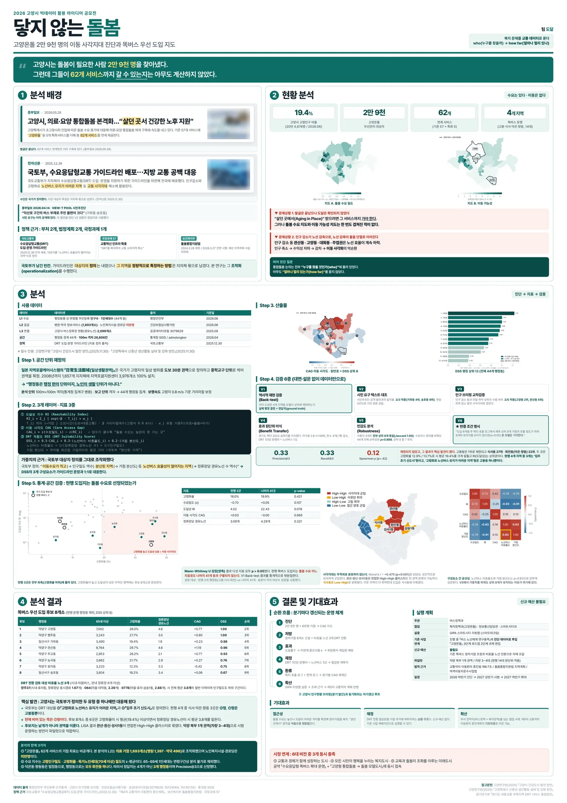
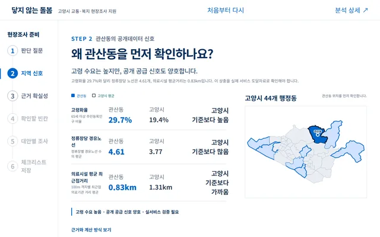
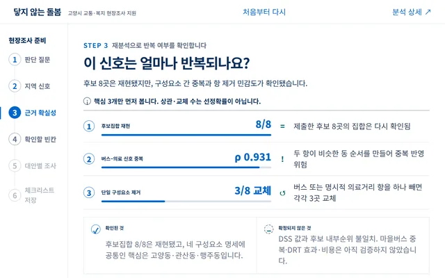
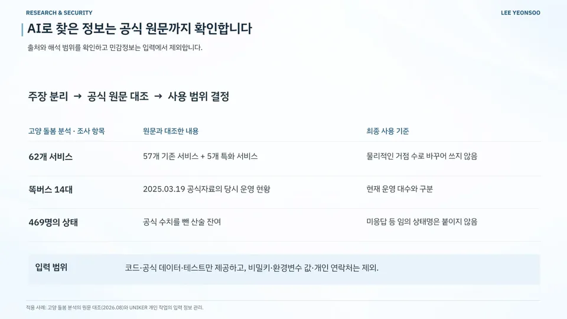

데이터 분석 / MVP 구현 / 공공·정책 / 돌봄·교통
닿지 않는 돌봄
Unreached Care — Goyang Care-Mobility Policy Dashboard
돌봄이 필요한 주민의 서비스 접근성과 이동 병목 진단
현재 상태공개 정책 사전검토 대시보드 배포
- 기간
- 2026.07–08 (본선 발표 2026.08)
- 팀
- 팀 도달 (3인)
- 내 역할
- 본선 발표 · 공개 대시보드 저장소 관리
- 도구
- 수상
- —
내 기여본선 발표를 맡았으며 공개 대시보드 저장소를 관리합니다. 지표 설계와 코드는 팀이 함께 작업했습니다.
사진·화면


크게 보기
크게 보기정책 대시보드: 관산동 사례로 보는 지역 신호출처goyang-care-policy-dashboard.vercel.app (새 창) 
크게 보기근거 확실성 점검: 이 신호는 얼마나 반복되나요?출처GitHub · goyang-care-policy-dashboard (새 창)


발표 자료

크게 보기포트폴리오 슬라이드 36쪽 · 본문 내용을 한 장으로 정리한 슬라이드

문제
돌봄이 필요한 주민이 서비스까지 가는 길에서 어디가 막히는지 알아야 했습니다. 돌봄 수요와 서비스 목적지, 정류장·배차·환승 조건을 함께 비교해 이동 병목을 찾기로 했습니다.
접근
- 44개 행정동·100m 격자에서 접근성을 계산해 행정동 단위로 집계
- 돌봄 수요 대리 지표와 의료·약국 접근성의 차이로 선별 점수 구성
- 가중치 4안·거리감쇠 8안 민감도, 지표 중복·항 제거·Global Moran's I·FDR LISA 분석
- 마을버스 84노선·정류소 1,660개·시간표 기반 OD 199,120행으로 이동 조건 재검토
- 2024-03-20 평일·보행 3.6km/h 기준, OD 25.02% 미산출
핵심 판단
결론을 'DRT 도입 순위'가 아니라 병목 유형(거리·배차·서비스 수요)별 정책수단 선택으로 정리
버스 비효율·시설 분산 지표의 중복(Spearman ρ=.938)을 고려해 단일 항 제거 민감도 함께 제시
결과
- 분석 단위44개 행정동 · 100m 격자
- 총여정시간 OD199,120행40 대표점 × 2,489 목적지 × 09:00·14:00
- 12개 시나리오 공통 후보 6곳(가좌·고양·관산·능곡·주교·행주) — 확정 도입지가 아닌 사전검토 후보
- Global Moran's I = .451899 (p=.0001)
- 후보 8곳/비교 32곳의 정류장 거리 392.0/182.1m, 정류장 500m 이내 격자 60.3/95.0%
- 공개 정책 사전검토 대시보드와 HTML 발표자료 배포
- 고양시 빅데이터 활용 아이디어 공모전 본선 발표
AI 활용
AI를 자료 조사에 활용했습니다.
한계와 다음 단계
고양시 공식 서비스가 아니며, 후보 지역은 확정 도입지가 아닌 사전검토 후보입니다(OD 199,120행·격자 비율은 주민 수·주민 비율이 아님). 조건부 시간 단축 비교는 실제 DRT 효과가 아니고, 2024-03-20 평일 시간표 기준(OD 25.02% 미산출)이라 현재 이동시간과 다를 수 있습니다.